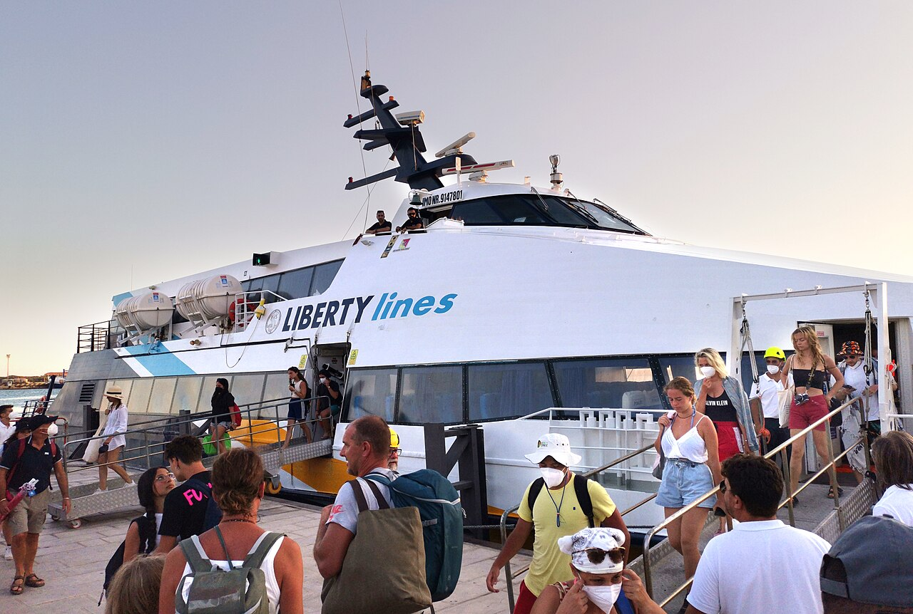
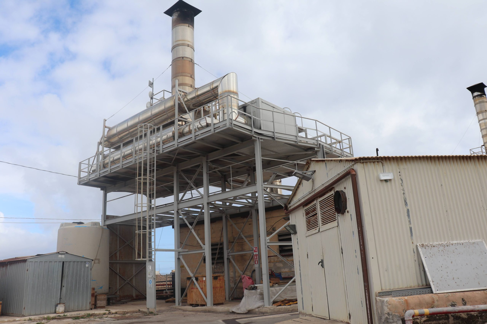
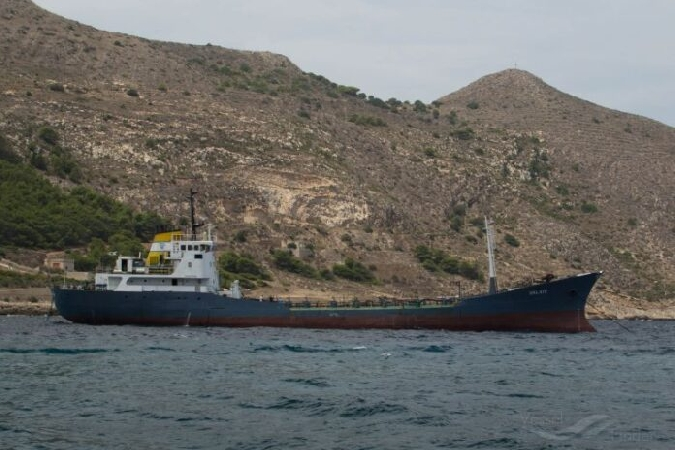

Favignana
By Mietek Ł, CC BY-SA 3.0, https://commons.wikimedia.org/w/index.php?curid=55053004
Favignana è la maggiore delle isole Egadi, fulcro amministrativo e snodo logistico dell'arcipelago situato di fronte alla costa occidentale della Sicilia. Caratterizzata da una morfologia pianeggiante e collinare, l'isola possiede una rete viaria ben sviluppata che collega il centro abitato con le principali calette, le frazioni e le zone agricole.
- Abitanti
nel comune - 4.444
- Istat (stima)
- Superficie
del comune - 37,21 km²
- Istat
Il sistema isola
Nel contesto del sistema insulare eoliano ed egadi, Favignana rappresenta un modello di forte pressione turistica stagionale. L'isola concentra le infrastrutture primarie necessarie a gestire i flussi di mobilità sostenibile, l'approvvigionamento energetico e idrico e la logistica dei rifiuti derivanti dalle migliaia di visitatori estivi.
Mobilità
La rete stradale e la mobilità dolce
A differenza di contesti montuosi o impervi, Favignana presenta una conformazione prevalentemente pianeggiante che ha favorito una forte cultura della mobilità ciclabile e pedonale, affiancata alla circolazione di auto e scooter residenti. Durante la stagione estiva, la mobilità urbana viene regolamentata severamente per limitare l'accesso dei veicoli a motore non residenti, preservando la quiete e la sostenibilità ambientale dell'isola.

I collegamenti marittimi e la continuità con la terraferma
Dal punto di vista della mobilità esterna e dei trasporti marittimi, Favignana è strettamente collegata al porto di Trapani e alle altre isole dell'arcipelago delle Egadi tramite un servizio regolare di aliscafi e navi traghetto. Questo sistema di continuità territoriale garantisce non solo il trasporto quotidiano dei pendolari e dei turisti, ma costituisce l'unico canale logistico attraverso cui transitano merci, veicoli commerciali e rifornimenti essenziali per l'intera comunità isolana.
Energia

Immagine a scopo didattico. Fonte: seafavignana.info / SEA Favignana.
Rete isolata e centrale termoelettrica
L'approvvigionamento elettrico di Favignana si basa su un sistema di "rete isolata" non collegato alla terraferma, la cui gestione integrata della produzione, distribuzione e vendita è affidata storicamente in concessione alla SEA S.p.A. (Società Elettrica di Favignana). L'elettricità dell'isola viene interamente generata in loco da una centrale termoelettrica alimentata a gasolio situata in località Madonna, dimensionata per reggere i forti picchi di consumo della stagione estiva. Trattandosi di un regime di mercato isolato, le tariffe e le regole contrattuali sono strettamente controllate a livello nazionale dall'ARERA, mentre il Comune di Favignana coordina la pianificazione energetica locale: quest'ultima, grazie ai finanziamenti del PNRR "[Isole Verdi]", mira a installare impianti fotovoltaici ed eolici per avviare una progressiva transizione ecologica e ridurre la dipendenza dai combustibili fossili.
Acqua
Dissalazione e risorse idriche sotterranee
L'approvvigionamento di acqua potabile a Favignana si basa sull'integrazione tra lo sfruttamento controllato delle falde acquifere locali e la produzione di acqua potabile tramite impianti di dissalazione e potabilizzazione. Per ridurre la dipendenza dal trasporto marittimo (molto costoso e vincolato al meteo), il Comune ha investito massicciamente nella dissalazione dell'acqua di mare. Attraverso il programma PNRR "Isole Verdi", l'amministrazione ha pianificato e sbloccato la realizzazione di nuovi impianti di dissalazione a osmosi inversa (di tipo mobile o removibile) specifici per Favignana, Levanzo e Marettimo, così da produrre autonomamente acqua potabile in loco.

Immagine a scopo didattico. Fonte: TP24 / Shipping Italy.
Gestione dei picchi estivi
L'aumento esponenziale della popolazione fluttuante in estate mette sotto pressione la rete idrica comunale, rendendo essenziale il monitoraggio costante dei consumi e l'eventuale supporto integrativo di navi cisterna autorizzate per il riempimento dei serbatoi.
Rifiuti
Raccolta differenziata e trasporto via mare
La gestione dei rifiuti a Favignana opera in un contesto isolato privo di discariche locali, basandosi su una rigorosa raccolta differenziata e sul successivo trasferimento dei materiali via mare verso la terraferma. Il servizio, coordinato dal Comune in sinergia con la SRR Trapani Nord, viene drasticamente potenziato in estate per gestire i forti picchi del turismo attraverso una flotta logistica dedicata ed eco-innovazioni. Grazie ai finanziamenti del PNRR "[Isole Verdi]", l'isola ha introdotto compostiere di comunità per trattare l'organico in loco e un'isola ecologica portuale alimentata a energia solare, mentre i cittadini possono conferire i materiali speciali e ingombranti direttamente presso il Centro Comunale di Raccolta (CCR) in Contrada Arena.